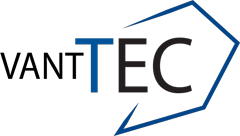
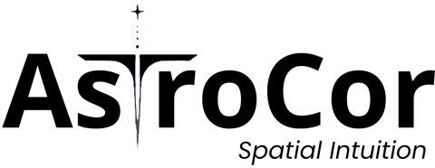

Emiliano Méndez Jiménez
I'm a Robotics and Digital Systems undergraduate at Tecnológico de Monterrey. I founded and lead the humanoid team at VantTec, and I'm a Research Intern at Astrocor, working on zero-shot object search for legged robots. Previously, I worked as computer vision engineer at ADA Labs and robotics software intern at AIRDX.
I like taking robot-learning research off the paper and onto real hardware: behavior foundation models and motion tracking on a Unitree G1, open-vocabulary navigation on a DEEP Robotics Lite3. I'm looking for a research stay or internship in 2027.
Tec de MonterreyB.S. Robotics2024 – 2028


ADA LabsCV Engineer2026
AIRDXRobotics SW Intern2025 – 2026
Publications & Talks
Physical AI, Live: Humanoid and Quadruped Demos
Venture Café AI Summit, Monterrey, 2026 · talk and live demo
Robot Learning & Perception
I work where robot learning, perception and real hardware meet: getting recent methods to run onboard, in closed loop, on robots that can fall over.
Teaching
SMALC: Robotics for 13-Year-Olds
VantTec Outreach, 2025 – now · volunteer instructor
Honors
| Sep, 2026 | 1st place, Carrier “Keep It Cool” Hackathon, with SentinelBox: neural-network HVAC health monitoring. Photo · Demo |
|---|---|
| 2025 | 5th place, Autonomous Drone category, Torneo Mexicano de Robótica |